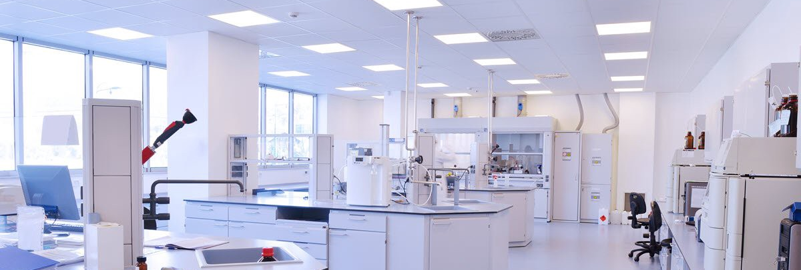

Instalaciones de Instrumentos Analiticos S.A.
Instrumentos Analíticos S.A. fue establecida en 2022 (es una empresa ficticia para el trabajo practico en FuLL Stack Python), con el objeto de brindar un servicio integral a las empresas e instituciones de Argentina y Latinoamérica que utilizan instrumental analítico en sus laboratorios y actuamos como respresentantes autorizados de las empresas mas importantes del mundo en la fabricación de instrumental analítico y también proveedoras de estandares de referencia y reactivos. Nuestros servicios incluyen el asesoramiento previo a la adquisición del instrumental, su provisión e instalación, la capacitación del personal, el soporte técnico para el desarrollo de métodos analíticos, la calificación y certificación de instrumentos con patrones trazables y el servicio técnico de mantenimiento preventivo y reparaciones. Nuestro objetivo es la satisfacción de nuestros Clientes, brindando nuestros servicios cualquiera sea su ubicación de Latinoamérica. Por ello, tenemos en cuenta sus necesidades de máxima productividad, con implementaciones veloces y seguras, ofreciendo soluciones rápidas y confiables a sus problemas. Estas premisas están respaldadas por un amplio y surtido stock de equipos, accesorios, repuestos y consumibles, que permite una rápida asistencia en respuesta a las necesidades de los Clientes. Contamos con un equipo de más de 100 profesionales totalmente comprometidos y orientados al Cliente. Químicos con diferentes especialidades, ingenieros y técnicos en electrónica, electromecánica y sistemas, trabajando en uno de los equipos multidisciplinarios más importantes en este rubro, apoyados por un eficiente plantel administrativo.